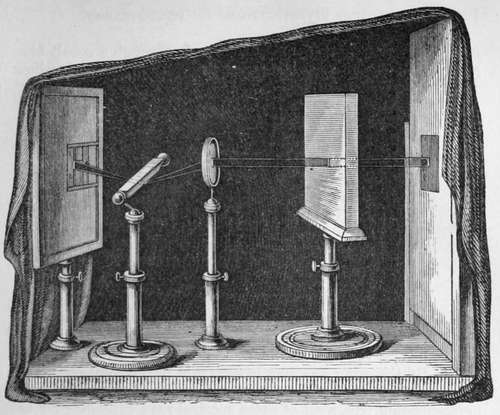
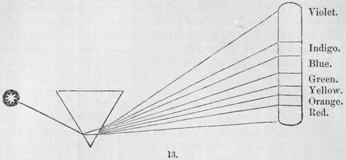
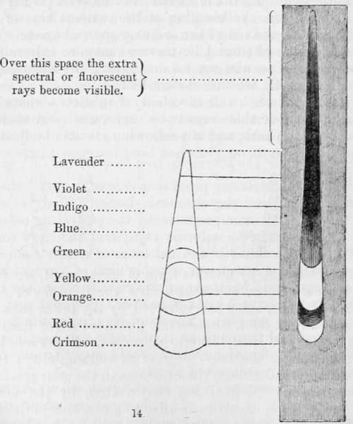

Chapter I. General Remarks On The Solar Agency Producing Chemical Change
Description
This section is from the book "A Manual Of Photography", by Robert Hunt. Also available from Amazon: A Manual of Photography.
Chapter I. General Remarks On The Solar Agency Producing Chemical Change
Previously to explaining the practice of photography, to which a separate division is given, it appears important that the physical conditions of the elements with which we have to work should be understood.
The sun-beam is our pencil, and certain delicate chemical preparations form our drawing-board. Every beam of light which flows from its solar source is a bundle of rays, having each a very distinct character as to colour and its chemical functions. These rays are easily shown by allowing a pencil of sunlight to fall on one angle of a prism : it is bent out of its path, or refracted, and an elongated image is obtained, presenting the various colours of which light appears to be constituted —red, orange, yellow, green, blue, indigo, and violet. This coloured image is called the solar or the prismatic spectrum. The red ray, being the least refracted, is found at the lower edge, and the violet, being the most so, at the other extremity of this chromatic series. Below the ordinarily visible red, another ray of a deeper red, distinguished as the extreme red, or crimson ray may be detected, by examining the whole through a cobalt blue glass ; and, by throwing the spectrum upon a piece of yellow paper, another ray appears at the violet extremity, named by Sir John Herschel the lavender ray. Yet more recently, Mr. Stokes has proved a most remarkable extension of the luminous rays. By throwing a prismatic spectrum into a solution of quinine in diluted sulphuric acid, or an infusion of the bark of the horse-chestnut tree, a set of extra spectral rays, extending far beyond the violet, make their appearance, proving the existence of light over a space which has hitherto been thought incapable of producing any luminous phenomena.
The original spectrum of seven bands of colour was examined by Sir Isaac Newton, and that eminent philosopher determined that a given degree of refrangibility indicated a given colour ; that the colour of a ray at once indicated its angle of refraction. Since the days of Newton, until our own time, this position had never been called in question; the seven rays were regarded as the primary colours of white light, and the law of Newton received as truth upon his authority. Sir David Brewster has, however, argued that this law will not stand the test of examination. He imagines that the prismatic spectrum consists of three chromatic spectra overlapping each other, and that those three colours—red, yellow, and blue—can be detected in every part of the image. Sir John Herschel has added two rays to the luminous or visible spectrum,—thus making the number nine instead of seven ; but these may, equally with the others, be but combinations of the three primaries. There is, however, much reason to doubt if the new extra spectral rays can be comprehended within these three.
The colours of light will be rendered most familiar by calling to memory the conditions of that very beautiful natural phenomenon, the rainbow. The primary bow is usually accompanied by a secondary image, in which the order of the colours is reversed. From close examination of the prismatic spectrum, I am disposed to believe that whenever we obtain this chromatic division of white light, it is accompanied by a secondary spectrum, and that the real conditions of the colours are as follows :—
The yellow is the most luminous ray, and the illuminating power diminishes on either side of it; on one side it blends with the blue, to form the green, and on the other with the red, giving rise to the orange my. The blue diminishing in intensity sinks towards blackness, and thus produces the indigo, the extreme edge of which represents the limit of the ordinary spectrum at that end ; as the outer edge of the red forms its limits, as far as the human eye is concerned, on the other. Beyond the indigo we have the violet ray : this would appear to be the blending of the red of the supplementary spectrum with the blue of the ordinary one, the lavender ray resulting from the intercombina-tion of the less luminous rays with the coloured surface upon which it is thrown. Then the extreme red or crimson ray will be seen to result from the blending of the extreme blue of the extraordinary with the red of the ordinary spectral image. This passage is still retained ; but I have every reason to believe that it will before long require some modification, the discovery of Mr. Stokes materially altering the conditions.
Sir William Herschel, and Sir Henry Englefield, determined the heating powers of these rays to be very varied. A thermometer was placed in each, and the following results obtained :—
In the blue ray, in | 3' the thermom. | rose | from 55° | to | 56°, | or 1° |
" green " | 3 " | " | 54 | " | 58 | " 4 |
" yellow " | 3 " | " | 56 | " | 62 | " 6 |
" full red " | 2 1/2 " | " | 56 | " | 72 | " 16 |
" edge of red " | 2 1/2 " | " | 58 | " | 73 1/2 | " 15 1/2 |
Quite out of visible light in 2 1/2' | " | 61 | " | 79 | " 18 | |
Sir John Herschel, by another form of experiment, has fully confirmed these results, and shown that the calorific, or heat-producing radiations, being less refracted by the prism than the light-exciting rays, exist a considerable distance further from the visible rays than has been hitherto suspected. Light and heat have not, therefore, the same degrees of refrangibility; their influences are not coincident, their maxima in the solar spectrum are wide asunder. Melloni has shown that, by the use of coloured media, these agencies can be, to a considerable extent separated from each other. Glass stained with oxide of copper, and washed on one side with a colourless solution of alum, admits the light rays most freely, but obstructs 95 per cent, of and extends some distance beyond them. The shaded wood-engraving (Fig. 14) will serve to assist the reader in comprethe heat rays. On the contrary, a slice of obsidian or black mica obstructs nearly all the light radiations, but offers no im-pediment to the passage of heat.

Continue to:
- prev: Chapter IX. General Summary Of The History Of Photography
- Table of Contents
- next: General Remarks On The Solar Agency Producing Chemical Change. Continued